1. Instalación
Ejecutamos el instalador descargado de la página web oficial.
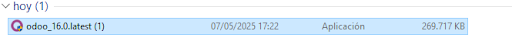Realizamos el proceso de instalación, teniendo en cuenta instalar PostgreSQL Server junto con Odoo Server.
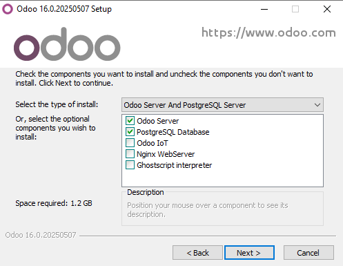 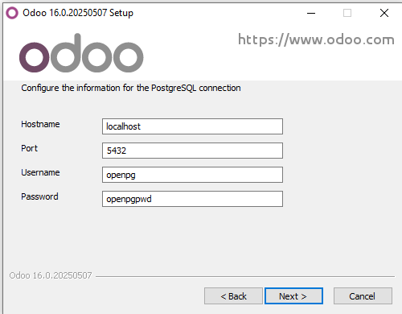Una vez acabado el proceso de preinstalación se empezará a instalar en nuestro ordenador.
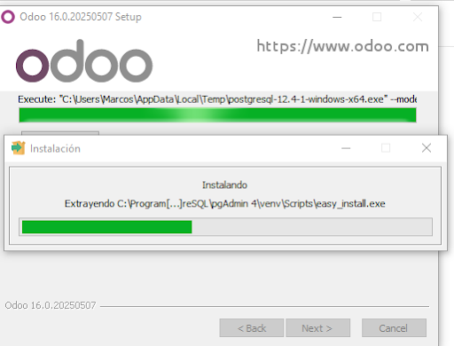Una vez instalado pulsaremos en abrir directamente y nos llevará a nuestro navegador para seguir el proceso de instalación.
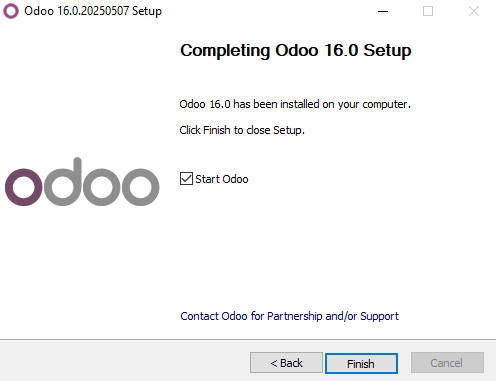En esta página deberemos rellenar los datos, es importante recordar la contraseña master password ya que será necesaria más tarde. Una vez rellenados le daremos a create database.
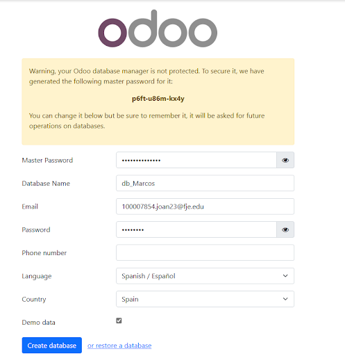Una vez creada la base de datos deberemos iniciar sesión:
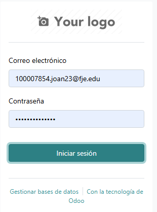Luego de haber iniciado sesión nos llevará a la siguiente ventana que es donde se encuentran todos los móduloque podremos instalar (para instalarlos tendremos que dar al botón de activar que sale en recuadro de cada módulo):
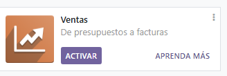Nosotros instalaremos estos módulos(Compra e Inventario) debido a que hemos pensado que nuestra PYME va a manejar productos físicamente, es decir como una tienda de barrio. Con estos módulos podremos saber los productos que hay en stock, facturas del proveedor, control del abastecimiento.
2. Módulos
Compra
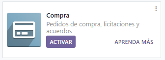En compra tenemos varios apartados a configurar:
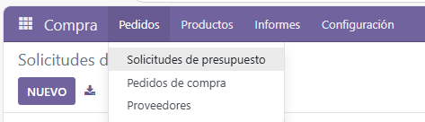En pedidos tenemos las solicitudes de presupuesto, los pedidos de compra y los proveedores:
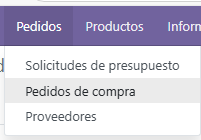Solicitudes de presupuestos: sirven para pedir presupuestos a diferentes proveedores para así poder comparar precios y poder elegir el más adecuado para la empresa
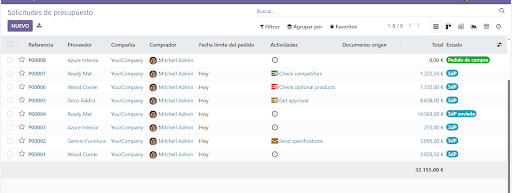Pedidos de compra: En esta apartado se harían los pedidos para comprar el material necesario para nuestros productos. El pedido se realizará después de haber comparado los presupuestos anteriormente.
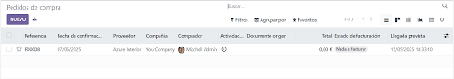Proveedores: Aquí tendremos nuestros proveedores habituales añadidos para poder consultarlos en cualquier momento o añadir nuevos. también conjuntamente su información como el teléfono, dirección, email …
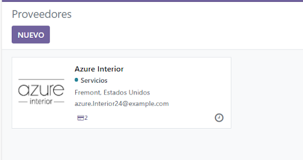En productos tenemos en general todos los productos a vender y sus variantes como puede ser si están en varios colores, modelos, etc.
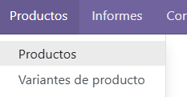Ejemplo de algunos productos:
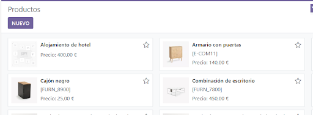En informes solo tenemos disponible la compra:
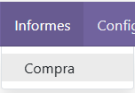En la compra podremos ver informes/gráficos y estadísticas sobre las compras.
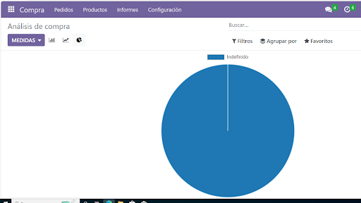Por último en configuración podremos ajustar la lista de precios de los proveedores, personalizar o cambiar algún aspecto a nuestro gusto, como añadir verificación en 3 pasos. podremos modificar las categorías de los productos, etc.
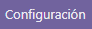Inventario
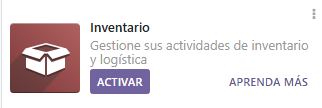En el apartado de operaciones podremos hacer la reposición, poner los ajustes en los inventarios, gestionar los traslados y desechar operaciones.
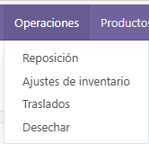Dentro de reposición dándole a nuevo podremos poner el nombre del producto, el stock real, el pronóstico, la ruta preferida, la cantidad mínima y máxima, y la cantidad a pedir.
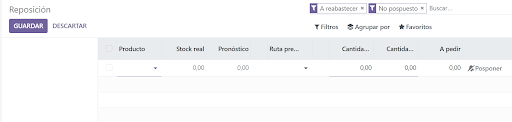En la parte de ajuste de inventario tendremos que crear uno nuevo y al crearlo tendremos que añadir el producto, la cantidad real, la cantidad contada, la diferencia, la fecha programada y al usuario.
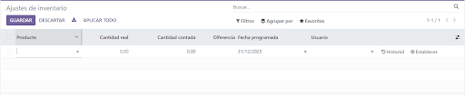Después en el de traslados creamos uno nuevo y podremos poner el contacto, la fecha programada, el tipo de operación, el documento de origen, el producto y la demanda.
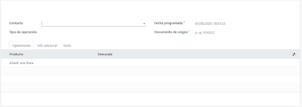En el ordenes de desecho cuando creemos uno nuevo tendremos que añadir el nombre, documento origen y cantidad del producto que queramos desechar.
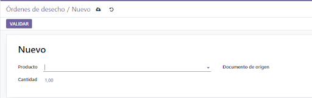En los productos podremos tanto gestionar los productos que ya hayamos creado anteriormente, crear productos y eliminarlos en caso de que ya no se vayan a vender.
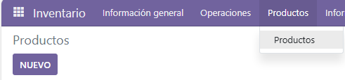A continuación en los informes podremos hacer los informes sobre el stock y también podremos ver el historial sobre los movimientos que hayamos hecho.
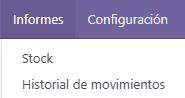En stock cuando le demos a nuevo podremos poner el nombre del producto, si puede ser vendido o comprado, el tipo del producto, el producto, la información general, el inventario, el precio de venta, el coste, referencia interna, código de barras, etc…
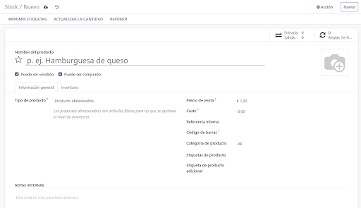Y lo que podremos hacer en configuración será configurar nuestros almacenes, tipos de operaciones, las categorías de los productos, las reglas de reabastecimiento y los ajustes del módulo de inventario.
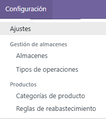3. Copia de seguridad / Backup
Para realizar la copia de seguridad de nuestro odoo con los módulos instalados deberemos entrar en el administrador de base de datos y seleccionar backup en la base de datos escogida. La ruta para ver las bases de datos es:
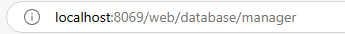 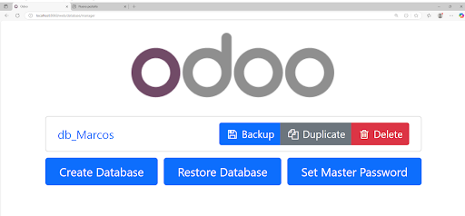Una vez seleccionada la opción de backup deberemos introducir la contraseña maestra antes nombrada.
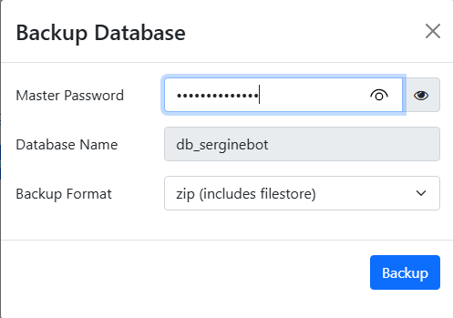Una vez hecho esto el backup se descargará automáticamente.
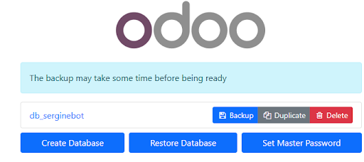
Para restaurar una copia de seguridad deberemos de tener el archivo de copia de seguridad desde donde se restaura la copia. Una vez se tenga el archivo nos dirigimos otra vez a esta ruta:
Y seleccionamos la opción de restaurar base de datos:
Nos pedirá la contraseña maestra, el archivo de copia y el nombre de la base de datos que le vamos a dar.
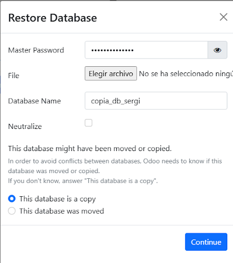Si queremos entrar en una base de datos en concreto debemos hacer clic en ella e introducir las credenciales.
4. Conclusiones
En conclusión odoo es un software que permite facilitar mucho la gestión de las PYME centralizando procesos en un solo sitio, trabajando a través de módulos, facilitando hacer copias de seguridad. En general es un entorno que ayuda a hacer todo más ameno teniendo plantillas a poder utilizar y ejemplos.